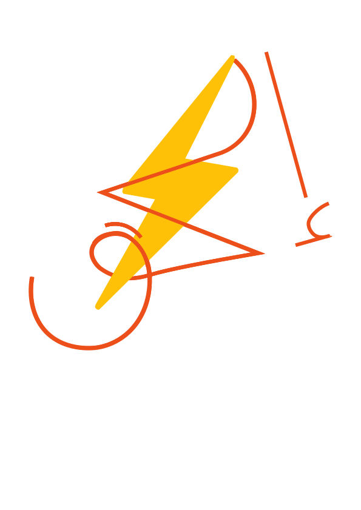

“I waited three weeks for the sale price. The day I finally bought it, it went back up.”
— a real buyer (placeholder)
The problem isn't scraping — it's that nobody verifies the price.
Social Impact The pain, made real
Two trackers. Both dead.
# the bait-and-switch
week 1 42,000 EGP # real price
week 2 50,000 EGP # inflated
week 3 “40,000 SALE” # 50% off — above real
Static scrapers read the number on the page. They can't tell a genuine drop from a pre-sale inflation.
the fix → a historical baseline + a cross-store check flags it as suspicious before you buy.
Yaoota503 · dead
Kanbkamdormant · 2022
2
active price trackers left in Egypt
Passive comparison sites failed because they can't see across stores. Someone has to verify.

El72 · Price Intelligence
Seize the deal before it's gone.
Real-time price tracking + AI-verified deals for the Egyptian market — delivered on WhatsApp, not email.
El72 · real-time price tracking & deal detection
Innovation & Technical The reveal
Watch it work.
A live price drop — detected, graded, and delivered as a WhatsApp alert in seconds.
→ live demo · the alert is the moment · (fallback: replay)
Live demo Live demo
El72, on a real product.
A flagship GPU tracked across Amazon, Noon, and Jumia. A quick tour, then the alert lands.
> watch it run
× exit demo
Responsible AI It actually works
It caught a real deal — and rejected a fake one.
Every alert is scored and explained. (placeholder data)
RTX 5080 dropped 50,000 → 41,000.
↓ the score says
Deal score 88 (Excellent) — alert sent.
“50% off” at 40,000 — the reference was 50,000.
↓ the check says
Flagged suspicious (only 8% below median) — no alert.
Lowest price in 4 months, cheapest of 3 stores.
↓ the score says
Deal score 91 (Excellent) — alert sent.
88deal score, Excellent grade
0fake discounts let through
3stores compared per product
Placeholder data — numbers are illustrative until a real capture is wired in.
Innovation & Technical It actually works — at scale
It holds up across the market.
Volume
what it tracks
Detection
what it decides
Placeholder data — from the seeded demo dataset.
Responsible AI It actually works — with trust
Not every “deal” is a deal.
The verification stack scores every observation. (placeholder data)
Deal quality
Excellent
30%
Good
45%
Fair
18%
No deal
7%
Suspicious flag
Clean
70%
Watch
22%
Flagged
8%
Cross-store rank
Cheapest
40%
Competitive
45%
Above
15%
Historical low
Yes
22%
No
78%
Placeholder data · the verification stack is the moat.
Innovation & Technical Your question, answered
A comparison site is a snapshot. We're a detector.
A comparison site
stateless · one page
f(price) → snapshot — a pure read
no history, no baseline
can't see the competitor's price
shows the number; can't verify it
A detector
stateful · cross-store
state: historical baseline (TimescaleDB)
verification: MAD + Isolation Forest + deal score
cross-store: sees all three stores
delivers: WhatsApp, cost-controlled
A comparison site shows you a price. El72 verifies it's real — and tells you when it's not.
Innovation & Technical The other question
Every tracker is a snapshot. Only this one verifies.
The question isn't “app or not” — Yaoota, Kanbkam, and the big platforms all show prices. The question is: does it verify the price and see across stores? None of them do.
Capability
Yaoota
Kanbkam
“Notify me”
generic scraper
Ours
Cross-store intelligence
×
×
×
×
✓
Historical baseline
×
×
partial
×
✓
Fake-discount detection
×
×
×
×
✓
ML anomaly scoring
×
×
×
×
✓
WhatsApp delivery
×
×
×
×
✓
Cost-controlled alerts
×
×
×
×
✓
Snapshot trackers plateau. This is the only one whose output gets smarter with every observation.
Innovation & Technical The engine, shown not explained
The loop under the hood.
Scraper (Playwright) → Redis Streams price_ingest
→
live ML analysis anomaly + deal score
→
fake-discount check suspicious → suppress
→
confirmed deal the alert
cross-store cheapest of N
→
WhatsApp utility-rate message
Event-driven. No polling loops, no blocking I/O.
Innovation & Technical The platform, and where the intelligence sits
A pipeline is scrape → store → alert. El72 is the intelligence that wraps it.
Scraper→TimescaleDB→Redis Streams→Notify
The pipeline: scraper → TimescaleDB → Redis → notification. It moves data. It does not decide what's real.
Detect→Grade→Flag→Rank
The same pipeline, wrapped in the intelligence layer: MAD + Isolation Forest detect, the deal score grades, fake-discount flags, cross-store ranks. That's the part that's defensible.
White = the pipeline (any scraper + DB). Orange = El72 — the verification + intelligence layer. Swap the scraper; keep the intelligence.
Innovation & Technical Technical depth · 1 of 4
Detection is a function, not a guess.
Layer 1 · MAD The fast path
MAD = median(|x − median(x)|)
score = price z vs. MAD
sub-millisecond · catches most drops
A cheap, fast check on every observation. If the price is far from the median, flag it.
Grades: 80 Excellent · 60 Good · 40 Fair · 20 Weak · 0 No deal.
the maps How signals become a score
// historical discount
capped at 30% off the median
// cross-store advantage
capped at 15% below competitors
// suspicious penalty
up to −30 from the fake-discount signal
Worked example · RTX 5080 21% drop, cheapest of 3, 7-day hold: 35·0.7 + 25·0.8 + 20·0.6 + 15·1 + 5·1 − 0 = 88 (Excellent)
Real code: services/analyzer/deal_scorer.py
Responsible AI Technical depth · 3 of 4
It's honest about fake discounts.
the signal When a “deal” is suspicious
reference ≥ 10% above median
AND current < 8% below median
AND competitors ≥ 3% cheaper
AND not near historical min
→ suspicious
The penalty
suspicious → up to −30 off the deal score
a signal, not a fraud verdict
worked The bait-and-switch
50,000 “reference” (10% above median) 40,000 “sale” (only 8% below median) competitors at 38,000 → flagged suspicious, no alert
Real deal 41,000 (21% below median, cheapest) → score 88, alert sent
Real code: services/analyzer/fake_discount.py
Innovation & Technical Technical depth · 4 of 4
The data no single store will show you.
cross-store One product, three stores
cheapest / most expensive store
market min · max · average
spread = (max − min) / min
store rank + gap vs. average
A single store will never tell you its competitor has it cheaper. El72 sees all three.
historical lows Two kinds of “lowest”
is_historical_low
→ market min near the all-time low
store_historical_lows
→ each store near its own low
Worked example · RTX 5080 Amazon 41,000 · Noon 43,500 · Jumia 42,000 cheapest: Amazon · market low: yes
Real code: services/analyzer/cross_store.py
Innovation & Technical
A quality harness and an award to back it.
PR review agent Production rigor for a 3-person team
scripts/review-pr.sh runs an automated LLM review on every pull request before merge.
Enforces boundaries: Redis Streams only, no cross-service imports, no print().
Catches issues before merge; findings must be addressed.
97%+ test coverage, async throughout, idempotent writes.
The harness is the force multiplier: three engineers shipping with enterprise-grade discipline.
DevOpsDays Cairo · 2nd Place Winner · 70,000 EGP
Feasibility & Scalability External capital validated the thesis
Presented to Athar Accelerator. They wrote us a check.
Cairo AI Hackathon 50,000 EGP R&D grant
First presentation of the idea to Athar Accelerator judges.
Received a 50,000 EGP fund — spent on our R&D server.
External validation that the problem is real and the solution is buildable.
The fund de-risks the hardware: the scraping + ML stack runs on dedicated infrastructure, not a laptop.
Cairo AI Hackathon · Athar Accelerator · 50,000 EGP
Social ImpactFeasibility & Scalability The business case
Where it pays off.
User sets a tracker
→
Verified deal ML + cross-store
→
WhatsApp utility-rate alert
→
Purchase the deal is seized
↻ every observation feeds the baseline — the data compounds
Credits
↓
pay-as-you-track via Vodafone Cash — zero commitment, mimics fakka cards
Fast-Lane
↓
zero-delay routing for high-demand drops — 15 min means sold out
B2B data
↑
the highest margin: anonymized demand feeds sold to retailers